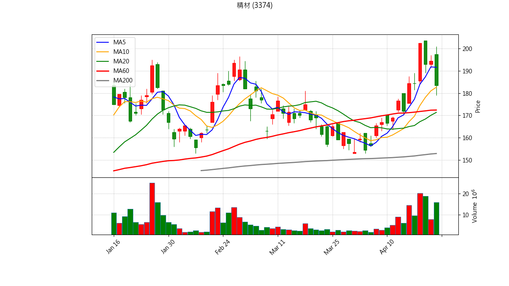
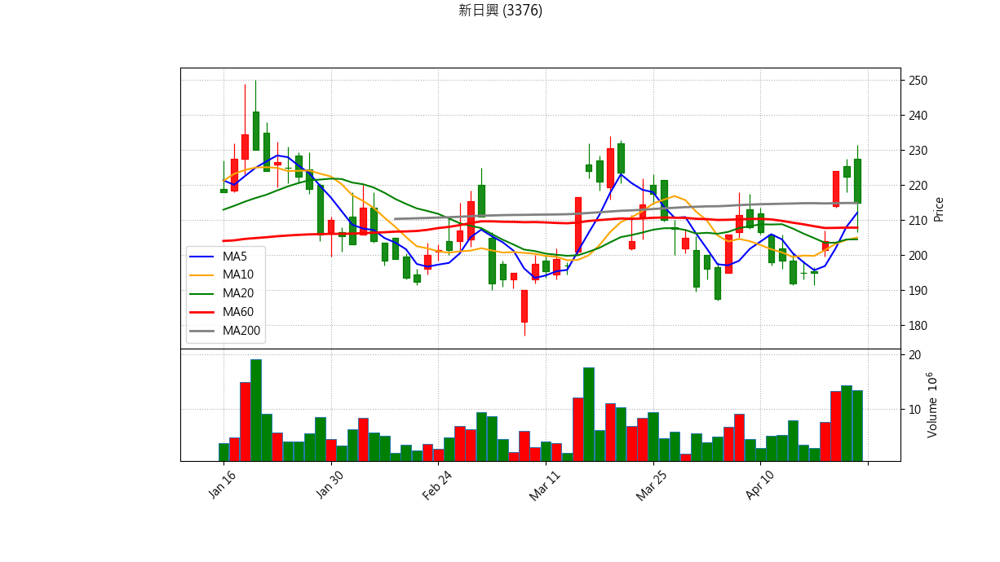
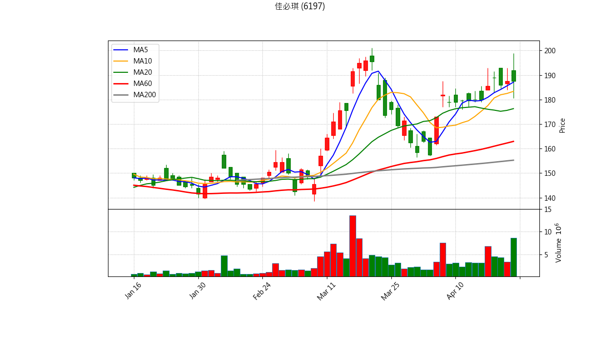

📊 股票庫存 出場與 AI 綜合診斷報告
分析時間: {datetime.now().strftime("%Y-%m-%d %H:%M:%S")}
結合量化條件與 Gemini AI 綜合技術分析
世德 (2066)
最新收盤價: 47.60 (更新時間: 2026-04-23 22:34)
💼 庫存狀態
買進均價：98.03
庫存股數：3000
預估損益：-151,290
報酬率：-51.44%
📋 量化診斷結果
💀 【跌破季線且季線下彎】生命線斷裂，絕對停損訊號！
📉 【下跌量增】賣壓沉重，跌勢可能持續。

藍線: 5MA, 橘線: 10MA, 綠線: 20MA, 紅線: 60MA, 灰線: 200MA
美隆電 (2477)
最新收盤價: 24.50 (更新時間: 2026-04-23 22:34)
💼 庫存狀態
買進均價：27.10
庫存股數：2000
預估損益：-5,200
報酬率：-9.59%
📋 量化診斷結果
✅ 目前未觸發明顯技術面出場條件，可依紀律續抱。

藍線: 5MA, 橘線: 10MA, 綠線: 20MA, 紅線: 60MA, 灰線: 200MA
Gemini 綜合診斷
精材 (3374)
最新收盤價: 183.50 (更新時間: 2026-04-23 22:35)
💼 庫存狀態
買進均價：193.12
庫存股數：260
預估損益：-2,501
報酬率：-4.98%
📋 量化診斷結果
⚠️ 【跌破 5日線】短線轉弱，留意停損/停利。
💣 【高檔爆量長黑】主力可能出貨，符合停利/停損要件。
📉 【下跌量增】賣壓沉重，跌勢可能持續。

藍線: 5MA, 橘線: 10MA, 綠線: 20MA, 紅線: 60MA, 灰線: 200MA
新日興 (3376)
最新收盤價: 215.00 (更新時間: 2026-04-23 22:35)
💼 庫存狀態
買進均價：220.14
庫存股數：320
預估損益：-1,645
報酬率：-2.33%
📋 量化診斷結果
💣 【高檔爆量長黑】主力可能出貨，符合停利/停損要件。

藍線: 5MA, 橘線: 10MA, 綠線: 20MA, 紅線: 60MA, 灰線: 200MA
Gemini 綜合診斷
安勤 (3479)
最新收盤價: 92.50 (更新時間: 2026-04-23 22:36)
💼 庫存狀態
買進均價：92.16
庫存股數：435
預估損益：148
報酬率：0.37%
📋 量化診斷結果
⚠️ 【跌破 5日線】短線轉弱，留意停損/停利。
💣 【高檔爆量長黑】主力可能出貨，符合停利/停損要件。

藍線: 5MA, 橘線: 10MA, 綠線: 20MA, 紅線: 60MA, 灰線: 200MA
Gemini 綜合診斷
佳必琪 (6197)
最新收盤價: 187.50 (更新時間: 2026-04-23 22:37)
💼 庫存狀態
買進均價：179.35
庫存股數：220
預估損益：1,793
報酬率：4.54%
📋 量化診斷結果
💣 【高檔爆量長黑】主力可能出貨，符合停利/停損要件。

藍線: 5MA, 橘線: 10MA, 綠線: 20MA, 紅線: 60MA, 灰線: 200MA